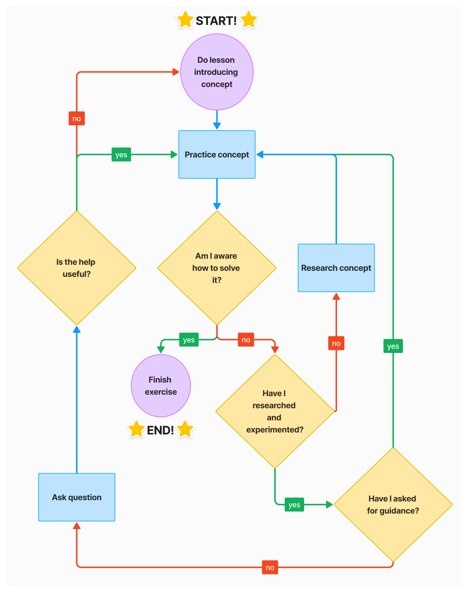

Học lập trình là một hành trình vô cùng bổ ích, nhưng đôi khi cũng đầy thử thách và dễ khiến bạn nản lòng. Tương tự như các kỹ năng khác, việc học lập trình đòi hỏi thời gian và công sức. Bạn không thể thành thạo nó chỉ trong một tuần hay thậm chí vài tháng. Tuy nhiên, mình tin rằng bất kỳ ai cũng có thể học lập trình nếu họ kiên trì và sẵn lòng đầu tư thời gian.
Trước khi bước vào nội dung của chương trình học, chúng ta sẽ đi qua những yếu tố quan trọng giúp bạn thành công cũng như các lối mòn cần tránh để tận dụng đối đa khóa học này. Hãy kiên trì vượt qua những khó khăn ban đầu, ngày thành công sẽ không xa!
Chúng ta hãy dành một chút thời gian để suy nghĩ về lý do bạn quyết định học lập trình.
Có thể động lực của bạn bao gồm những ý trên hoặc thậm chí những lí do hoàn toàn khác. Dù là gì đi nữa, hãy giữ ngọn lửa đó trong tim của bạn vì điều đó sẽ thúc đẩy và giúp bạn vượt qua hành trình này cũng như dẫn đường cho bạn đến một mục tiêu cụ thể.
Tư duy của bạn rất quan trọng khi tự học bất kỳ kỹ năng mới nào, không chỉ là lập trình. Tư duy của bạn sẽ ảnh hưởng nhiều hơn đến khả năng thành công của bạn so với hầu hết các yếu tố khác.
Thông thường mọi người nghĩ rằng nếu họ không thành công trong điều gì đó trong lần thử đầu tiên, họ sẽ không bao giờ làm được. Họ tin rằng mình không đủ thông minh để hiểu hoặc làm một số việc.
Tuy nhiên, với lượng lớn nghiên cứu cho thấy rằng trí thông minh không phải là cố định mà có thể được phát triển. Với một tư duy tăng mở và cầu tiến, kết hợp với nỗ lực và kiên trì, chúng ta có thể cải thiện mọi thứ.
Điều này có ý nghĩa gì đối với chúng ta? Nó mang lại niềm tin là bạn có thể học các kỹ năng mới à phát triển tài năng mới với sự kiên trì và quyết tâm.
Trong suốt khóa CS50 này, sẽ có nhiều lúc bạn gặp khó khăn với một khái niệm hoặc một vấn đề lập trình và hoài nghi về khả năng của mình. Khi gặp phải tình huống này, hãy nhắc nhở bản thân rằng bạn có thể chưa hiểu ngay lập tức nhưng bạn sẽ làm được, hãy kiên nhẫn với bản thân. "No pain no gain." Hãy động viên bản thân rằng những chông gai này để làm thành công của mình thêm vẻ vang, và khi vượt qua bạn sẽ vươn tới một tầm cao mới. Vì vậy đừng quên ăn mừng, chia sẻ thành công của mình trong những phút giây thăng hoa đó!
Khi bạn hoài nghi về khả năng của mình, hãy suy nghĩ về những thành công mà bạn đã đạt được trong khi học lập trình: những bài tập bạn đã hoàn thành và những khái niệm mà bạn từng không hiểu nhưng bây giờ đã hiểu. Đây là tất cả các bằng chứng cho thấy rằng bạn có thể làm được.
Việc học các khái niệm và sau đó thực hành chúng sẽ giúp bạn hiểu rõ hơn về cách các thứ hoạt động và kết hợp với nhau. Các problem sets là được tạo ra để đảm bảo rằng hiểu biết lý thuyết của bạn khớp với cách các khái niệm và ứng dụng trong thực tế.
Khi học, tâm trí của bạn sẽ liên tục chuyển đổi giữa chế độ tập trung (focused) và lan toả (diffuse). Với chế độ focused, não bộ của chúng ta xử lý từng thông tin riêng lẻ một cách tỉ mĩ, còn với chế độ diffuse, não bộ thường xử lý một lượng thông tin lớn hơn nhưng không đi vào phân tích sâu. Cũng giống như đèn pin thường có hai chế độ: một chế độ chiếu sáng focused vào một điểm, giúp người ta tìm kiếm một vật cụ thể, chế độ còn lại phân tán ánh sáng ra xung quanh giúp người ta có tầm nhìn rộng hơn. Đây là thời điểm mà não bộ bạn sẽ kết nối những gì bạn đã học với những điều khác mà bạn biết.
Vậy suy nghĩ nào quan trọng hơn?
Câu trả lời là không có trạng thái nào quan trọng hơn cả. Nghe thì có vẻ hai trạng thái này trái ngược nhau, nhưng thực chất chúng lại bổ trợ cho nhau. Chúng ta cần luân phiên giữa hai chế độ này để mang lại kết quả cao nhất. Khi bị không hiểu một khái niệm hoặc bị "bí" với bài tập, việc nghỉ ngơi hồi phục tâm trí và tạo thời gian để tiềm thức của bạn kết nối thông tin thường mang lại giải pháp cho vấn đề của bạn. (Nhớ là nỗ lực giải quyết vấn đề trước tiên và sau đó nghỉ ngơi)
Mẹo: Tiếp thu kiến thức, thực hành kiến thức và cuối cùng là hướng dẫn kiến thức cho người khác.
Hướng dẫn và chia sẻ những gì bạn biết cho người khác là một cách tuyệt vời để củng cố những gì bạn đã học và thường giúp bạn phát hiện ra những lỗ hổng trong kiến thức của bạn mà bạn không thể nhận ra nếu không có trải nghiệm này.
Bạn có thể thực hành phương pháp học này bằng cách chia sẻ bài tập, thắc mắc và giúp đỡ những người khác trong cộng đồng của CS50 CoderSchool.
Gặp khó khăn trong lúc học là việc không tránh khỏi. Có lẽ là do khái niệm mới quá
phức tạp hoặc gặp bug trong quá trình giải bài tập. Bạn hãy tận dụng
những công cụ sau để tìm giải pháp phù hợp:
Hoặc các bạn có thể tham khảo và vận dụng sơ đồ sau:
Đừng bỏ cuộc. Hãy tìm sự giúp đỡ vào thời điểm thích hợp, không quá sớm cũng không quá trễ. Tuy nhiên là hỏi sớm thì vẫn tốt hơn là không hỏi gì cả.
Đối với bạn mới tiếp cận với lập trình, các công cụ như ChatGPT hay GitHub Copilot có thể tạo ra những điểm mù và lỗ hổng trong kiến thức.
Bạn sẽ thành công hơn với CS50 bằng cách dành thời gian mỗi ngày cho việc học, thay vì chỉ tập trung mỗi tuần một buổi. Việc xây dựng thói quen học tập hằng ngày vào một thời gian cụ thể cùng với một mục tiêu rõ ràng sẽ bảo đảm cho sự tiến bộ không ngừng.
Thời gian để nắm vững khái niệm trong lập trình không đồng nghĩa với việc bạn thông minh hoặc kém hơn người khác. Đơn giản là vì mỗi người có kinh nghiệm và trải nghiệm sống khác nhau.
Kiên trì là chìa khóa của thành công. Do vậy, dành thời gian để học lập trình mỗi ngày. Tránh những lối đi tắt dẫn đến việc bỏ lỡ cơ hội học hỏi. Đồng thời trải nghiệm, học tập theo cách riêng của mình và ưu tiên hiểu cách giải quyết vấn đề hơn là chỉ hoàn thành problem set.
Trì Hoãn sẽ là kẻ thù lớn nhất cho sự tiến bộ của bạn.
Học liên tục trong thời gian dài thường dẫn đến quá tải, làm giảm năng suất học tập.
Những việc có thể làm bạn phân tâm thường phá vỡ sự tập trung và làm bạn dễ trì hoãn đên việc học CS50
Lạc vào ngõ cụt do chương trình CS50 cung cấp thông tin nền tảng và bao gồm nhiều vấn đề khác nhau nên học viên dễ lạc vào ngõ cụt khi cố tìm hiểu quá sâu về những thứ không cần thiết
So sánh bản thân với người khác. Thường mọi người hay so sánh mình với những người có nhiều kinh nghiệm hơn, dễ gây thất vọng và chán nản.
Ghi chú không hiệu quả Mình không khuyến khích việc ghi chú quá nhiều vì tốn thời gian và không hiệu quả.
Học một kỹ năng mới là một hành trình đầy thử thách và chông gai. Mình hy vọng rằng những nguyên tắc được đề cập ở đây sẽ giúp bạn có một bước đệm tốt hơn để thành công và tận dụng tối đa lợi ích từ khóa học CS50.
Đừng lo lắng nhiều quá, cứ học thôi! Và đừng quên tận hưởng từng phút giây trên hành trình diệu kỳ này.